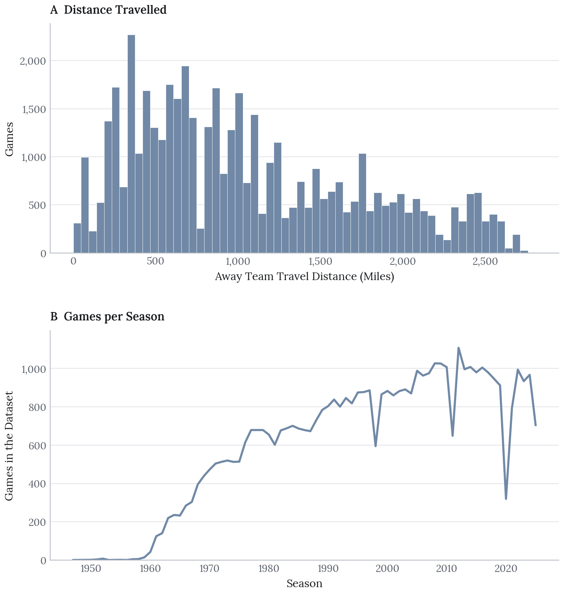
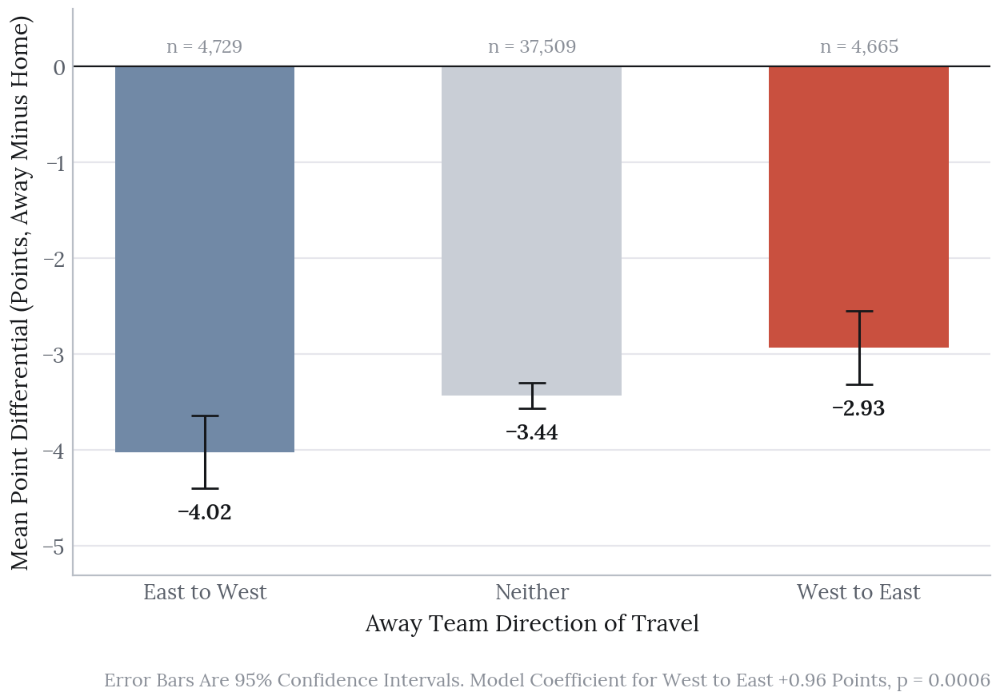
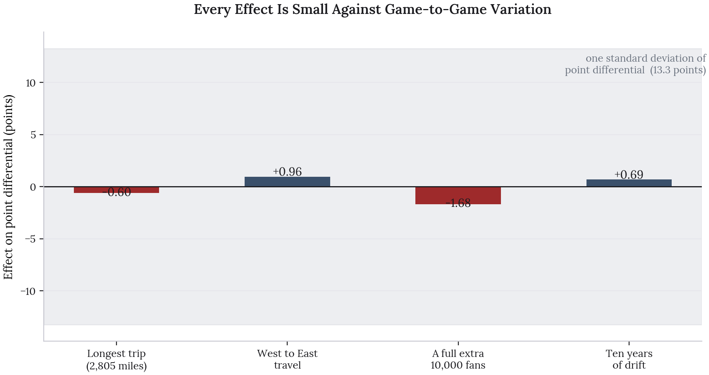

Does Travel Cost NBA Teams the Game?
In collaboration with Afrah Boateng, Mackenzie Henderson and Tyler Kero
The Decision
Report effect sizes alongside significance, because at 46,903 games almost everything is significant.
Takeaways
- Travel distance has no detectable effect on point differential.
- Flying west to east is worth about a point. The reverse trip is worth nothing.
- The model explains 0.5% of the variance, so every effect is small against game-to-game noise.
Travel is the standard explanation for why away teams underperform. Long flights, lost sleep, crossing time zones. This project tests whether the distance an NBA away team travels actually shows up in the scoreline, using every regular season game from 1947 to 2025.
It does not. The distance coefficient is statistically indistinguishable from zero. What does show up is the direction of travel: teams flying west to east gain close to a point, while the same trip in reverse shows nothing. That is a result about time zones rather than about mileage.
The Question
Does the distance an away team travels affect point differential, measured as away score minus home score?
The reference point is Deddens and Steenland (1997), who found limited effects of travel distance on NBA performance. Their analysis covered a far shorter window. Revisiting the question across seven decades gives enough games to detect an effect that small, if one exists.
The Data
The dataset is built from Kaggle’s NBA box score archive, one row per regular season game, joined to the geodesic distance between the home and away teams’ cities.
| Games | 46,903 |
| Seasons | 1947 to 2025 |
| Mean point differential | -3.45 (home advantage) |
| Standard deviation | 13.26 |
| Median travel distance | 896 miles |
| Longest trip | 2,805 miles |

Travel direction is coded into three groups from the time zones of the two cities: West to East, East to West, and Neither, where both teams sit in the same zone. Neither is the reference category and covers 37,509 of the games.
The standard deviation of 13.26 points is worth holding onto. It is the yardstick every effect below has to be measured against.
Models
Four nested linear models, each adding one term, fitted with heteroskedasticity-robust standard errors:
- Point differential on travel distance alone
- Adding travel direction
- Adding game attendance
- Adding year
Robust standard errors matter here because the variance of point differential is not constant across the seven decades the sample covers.
The Null Result
Binning the games by travel distance and plotting the mean point differential in each bin gives a flat line. The confidence intervals overlap the overall mean across the entire range.
The regression agrees. The coefficient on distance is -0.0002 points per mile with a p-value of 0.13, which is not distinguishable from zero. Taken at face value, even the longest trip in the dataset, 2,805 miles, would cost the away team six tenths of a point. Against a standard deviation of 13.26 that is nothing.
This is a null result on a sample of 46,903 games, which makes it a reasonably strong one. With this much data, an effect of any practical size would have been detected.
What Does Show Up

Direction separates where distance does not. Teams travelling west to east gain 0.96 points relative to teams not changing time zone, and the effect is statistically significant (p = 0.0006). The same journey east to west shows -0.10 points and a p-value of 0.72, which is nothing at all.
The asymmetry is the interesting part. If travel were simply tiring, both directions would hurt, and the longer the flight the worse it would get. Instead one direction helps and the other does nothing, which points at circadian alignment rather than fatigue. A team flying west to east plays an evening game that falls later in their body clock, when they are closer to peak alertness, and this is consistent with the sleep literature the study cites.
Attendance and year both come out statistically significant as well. An extra 10,000 spectators is associated with 1.7 points against the away team, and point differentials have drifted upward by about 0.7 points per decade.
Everything Is Significant and Almost Nothing Is Large

This is the figure that matters most, and it is the one the original report does not have.
At 46,903 games, almost any effect reaches statistical significance. Three of the four terms in the final model have p-values below 0.001. But plotted against the actual spread of game outcomes, every one of them disappears into the noise. The largest, a full extra 10,000 fans in the building, moves the expected margin by 1.7 points when game-to-game variation is 13.3.
The model’s adjusted R-squared is 0.0053. It explains half a percent of the variance in point differentials. The F-test is overwhelmingly significant and the model is very nearly useless for prediction, and both of those statements are true at once.
That is the honest summary of the study: the associations are real and they are tiny. Reporting the p-values without the effect sizes would leave a misleading impression, which is why this figure exists.
Limitations
This is descriptive, not causal. Games are not independent. Team quality persists across a season, injuries cluster, and league dynamics shift. Year as a numeric covariate captures long-run drift but not within-team or within-season correlation, so the coefficients are average associations.
Distance is not fatigue. Geodesic distance measures separation between cities. It says nothing about rest days, back-to-back games, charter conditions, or sleep actually lost. The direction result hints that the mechanism is circadian, and none of these variables measure that directly.
Seven decades is a long time. Court standardisation, player movement, and the comfort of travel have all changed since 1947. The relationship between travel and outcome is unlikely to have been stable across the whole sample, and the model fits one coefficient to all of it.
Distance and direction are correlated. Long trips are disproportionately cross-country ones, so the two variables carry overlapping information and their individual coefficients should be read with that in mind.
Next Steps
Model rest directly: Days since the last game, and whether it was a back-to-back, are the variables most likely to carry the fatigue effect that distance is standing in for.
Use time zones crossed instead of miles: The direction result suggests zone changes are the operative quantity. Signed zones crossed would test that against distance head on.
Allow the relationship to vary by era: Interacting travel terms with decade would show whether the effect has weakened as travel has become easier.
Cluster the standard errors: Robust errors handle non-constant variance but not the dependence between games involving the same team. Clustering by team or season would give more honest intervals.